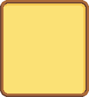
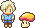

「情報工学の力で、人々に魔法を届ける」
中央大学理工学部情報工学科。
幼い頃からファンタジーな世界に憧れを抱き、自身のこだわりを形にするプログラミングに日々勤しんでいる。
「ユーザー体験」を磨き込むべく、「AI」「形状処理」といった幅広い技術知識を用いて、柔軟かつ効率的な実装を行うのが強み。
“Bringing magic to people through the power of information engineering”
Department of Information Engineering, Faculty of Science and Engineering, Chuo University.
Having been fascinated by fantasy worlds since childhood, I devote myself daily to programming, bringing my unique vision to life.
My strength lies in leveraging a broad range of technical knowledge to implement solutions efficiently, with a focus on refining the “user experience.”
このWebサイト。
これまでのモノづくりを棚卸するために制作。
単なる作品一覧ではなく、ゲームライクなUIや遊びを取り入れ、私の世界観を表現した。
制作人数：1人
担当箇所：コーディング, デザイン, 音楽
言語：HTML, CSS, JavaScript
This website.
Created to take stock of my past creative work.
Rather than simply listing my projects, I incorporated game-like UI and interactive elements to express my personal aesthetic.
Team Size: 1 person
Responsibilities: Coding, Design, Music
Languages: HTML, CSS, JavaScript
Blender上のアクティブオブジェクトのUVマップから、新しいメッシュオブジェクトを生成するアドオン。
過去作品「おりがみチェス」の制作工程においてボトルネックであった、モデル手動平面展開を自動化するために開発。
これにより作業効率が大幅に向上し、制作物の品質向上に貢献した。
制作人数：1人
担当箇所：コーディング
ツール / 言語：Blender / Python
An add-on for Blender that generates new mesh objects from the UV maps of active objects.
Developed to automate the manual unwrapping of models, which was a bottleneck during the production of my previous work, “Origami Chess.”
This significantly improved workflow efficiency and contributed to higher production quality.
Team Size: 1 person
Responsibilities: Coding
Tools / Languages: Blender / Python

ペーパークラフト型ブラインドチェス。
大学の授業「画像・映像コンテンツ演習3」にて制作。
従来の視覚障がい者向けチェスが高価で認知負荷が高いという課題を解決することを目標に制作した。
触覚のみで判別可能な独自形状、組み立てやすさを追求した。
制作人数：4人
担当箇所：モデリング, 紹介用Webサイト制作
ツール / 言語：Blender / Python, HTML, CSS
A paper craft version of blind chess.
This project was developed with the goal of addressing the issues associated with traditional chess sets for the visually impaired, which are often expensive and place a high cognitive burden on users.
We focused on usability, including unique shapes that can be distinguished solely by touch and ease of assembly.
Team Size: 4 people
Responsibilities: Modeling, Creation of promotional website
Tools / Languages: Blender / Python, HTML, CSS
追跡AIを備えたネコと、逃走AIを備えたネズミによる追いかけっこ再現コンテンツ。
大学の授業「画像・映像コンテンツ演習2」にて制作。
マップには、シード値によるランダム生成機能を実装したことで、毎回異なる環境でプレイ可能にした。
制作人数：4人
担当箇所：モデリング、マップ生成、UI
ツール / 言語：Unity, Blender / C#
A simulation of a cat-and-mouse chase featuring a cat with a pursuit AI and a mouse with an escape AI.
Created for the university course “Image and Video Content Seminar 2.”
By implementing a random generation feature based on seed values for the map, we enabled gameplay in a different environment every time.
Team Size: 4 people
Responsibilities: Modeling, Map Generation, UI
Tools / Languages: Unity, Blender / C#
マス目状のフィールドで、立方体の自機を転がしながら操作し、敵を倒すアクションゲーム。
Track JobのBeginner's Game Jamにて制作。
フィールド情報を一元管理するクラス設計や、継承を用いた武器アイテム実装に力を入れた。
制作人数：3人
担当箇所：フィールド管理、敵AI、武器システム
ツール / 言語：Unreal Engine 5 / C++, Blueprint
An action game where you control a cube-shaped player character by rolling it across a grid-like field to defeat enemies.
Created for Track Job’s Beginner’s Game Jam.
I focused on class design for centralized field management and implementing weapon items using inheritance.
Team Size: 3 people
Responsibilities: Field Management, Enemy AI, Weapon System
Tools / Languages: Unreal Engine 5 / C++, Blueprint
主人公のアルマジロを、「歩き」と「転がり」のアクションによって操作する3Dアクションゲーム。
就活用の作品作りと、Unreal Engineの勉強も兼ねて制作を始めた。
転がり時の効果音変化や、攻撃時のヒットストップ演出など、手触りにこだわった。
制作人数：1人
担当箇所：モデリング、プログラミング全般
ツール / 言語：Unreal Engine 5, Blender / Blueprint
A 3D action game where you control the protagonist, an armadillo, using “walking” and “rolling” actions.
I began developing this project to create a portfolio for job hunting and to study Unreal Engine.
I paid close attention to the game's feel, including changes in sound effects when rolling and hit-stop animations during attacks.
Team Size: 1 person
Responsibilities: Modeling, General Programming
Tools / Languages: Unreal Engine 5, Blender / Blueprint
育成ゲームの要素を取り入れた、タスク管理Webアプリ。
登録したタスクを期限までに達成することで、ペットを育てることができる。
Track JobのBeginner's Hackathonにて制作。
開発時は率先してコード統合を担い、メンバーの進捗状況の可視化に努めた。
制作人数：5人
担当箇所：メインページ制作、コード統合
言語：Python (Streamlit)
A task management web app incorporating elements of a pet-raising game.
By completing registered tasks by their deadlines, you can raise a pet.
Created for the Track Job Beginner's Hackathon.
During development, I took the lead in code integration and worked to visualize the team’s progress.
Team Size: 5 people
Responsibilities: Main page development, code integration
Language: Python (Streamlit)
東京都の高さ座標データから、VRML上に東京都の街並みを、道路と建物を色分けして再現するバーチャルコンテンツ。
大学の授業「画像・映像コンテンツ演習1」にて制作。
欠損点の補完や、データ削減による3Dモデルのジャギー修正により、データ量が小さく・綺麗な街並みを再現することを目標とした。
制作人数：4人
担当箇所：3Dモデル処理, 建物と道路の分類処理
言語：C++, Python, VRML
Virtual content that recreates the streetscape of Tokyo in VRML using elevation data from the city, with roads and buildings color-coded.
Created for the university course “Image and Video Content Seminar 1.”
The goal was to recreate a clean, high-quality streetscape with minimal data volume by filling in missing points and smoothing out jagged edges in the 3D model.
Team Size: 4 people
Responsibilities: Modeling, classification of buildings
Languages: C++, Python, VRML
フィールドである教室内で、次々飛んでくる障害物を避けながら、次々増えていく教室の汚れを音楽に合わせて掃除する、弾幕・リズムゲーム。
中央大学のUnityサウンドゲームジャムにて制作。
制作ではゲーム内のドット絵作成を全て担当し、可愛らしいデザインを心がけた。
制作人数：4人
担当箇所：デザイン
A bullet-hell rhythm game set in a classroom where players must avoid obstacles flying in one after another while cleaning up the increasing dirt in the classroom in time with the music.
Created at Chuo University’s Unity Sound Game Jam.
I was responsible for creating all the in-game pixel art and aimed for a cute design.
Team Size: 4 people
Responsibilities: Design
ゆっくりボイスによるゲーム実況チャンネルを運営していた。
Minecraftの建築実況プレイが中心。
自らの創造を発信し、多くの人に楽しんでもらうことを目的に始め、以来5年ほど投稿を続ける。
ファンタジーな感性を表現する建築と、見やすく面白い動画編集に力を入れていた。
制作人数：1人
担当箇所：ゲームプレイ, 動画編集
ツール：ゆっくりムービーメーカー4
I ran a gameplay commentary channel.
The channel focused on Minecraft building gameplay.
I started the channel with the goal of sharing my creations and entertaining as many people as possible, and have continued uploading content for about five years since then.
I focused on creating buildings that expressed a fantasy aesthetic and on video editing that was both easy to watch and entertaining.
Team Size: 1 person
Responsibilities: Gameplay, Video Editing
Tools: Yukkuri Movie Maker 4